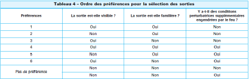
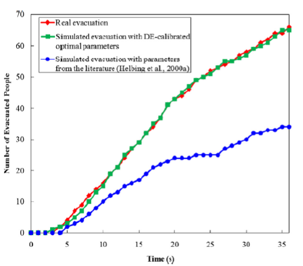
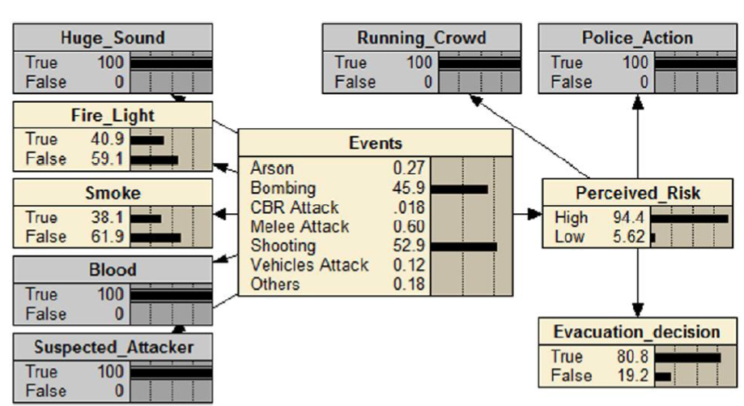
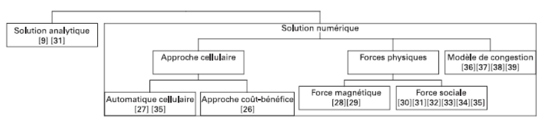
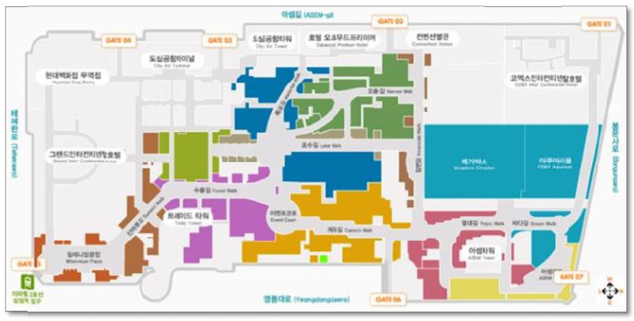

Chapter 1 Psychological aspect
1.1 Psychology of human behavior
The cognitive abilities of an agent considered in isolation, that is to say out of all interactions with his environment (located action) or with other agents (distributed cognition), are weaker than if he could support these elements to increase cognitive abilities. In fact, an agent whose abilities are limited (limited rationality) can achieve his goal in an environment because he has the cognitive resources of this environment and that he solves certain problems in interaction with other agents. In addition, it is said that the rationality of an agent is limited when his cognitive abilities prevent him from having optimal behavior. [1]
Depending on the situation and the environment, some of our cognitive abilities work differently:
Perception: The principle of affordance is emerging because I will not perceive the properties of objects around us but rather the possibilities of actions that offer us these objects. Moreover, we can perceive our environment differently according to our interactions with it, for example when we can reach an object using a laser, we perceive the distance shorter than when we do not have a laser. [2]
Action: There is a difference between planning and reaction, indeed, even if our actions are planned there will always be reactions to the environment around us. For example, before going down a ski slope, an agent plans his race but once in action he has to react to the various constraints with the help of his know-how. Moreover, the repetition of gestures and the habit influences our way of perceiving the world and therefore our reactions are unconsciously influenced.
Language: To interpret an expression, you must always pay attention to the context of utterance, for example.
Memory: We also use the environment to remind us of a task. For example, when we have an appointment, we note it in a diary or in our phone. Our knowledge uses all our senses that simulate an action and then add it to our memory. Moreover, we do not memorize the past actions but rather simulate the potential future actions, it is the “I act, so I think”. [3]
The situated cognition is also interesting for the human behavior, indeed the group of agents (or organization) removes the limits of the cognitive capacities of these members by dividing the resolution of the problem according to the capacities of each one. An organization therefore has much more cognitive capacity than an isolated agent since it implements the capabilities of each agent of the organization to achieve these ends. [1]
In addition, agents not only use their own experiences to interact with the environment, they also use the experiences of other agents. [2]
1.2 Human behavior in emergency situation
During an emergency evacuation, there are three major factors to take into account: the type of danger that presents itself, the environment around us and the people who can help us (safety officer, safety officer evacuation …). But before establishing the different behaviors during an emergency, we must first know the direct reactions.
Indeed, when an alarm sounds, it must first correctly hear to react quickly to the situation but also understand it: we must be careful not to discredit an alarm because of “false alarms” past heard during exercises.
In the event of an alert, there are three behaviors that stand out: the waiting for instruction, evacuation of the building and the search for information to proportion its reaction according to various factors (location of the aggressor, the type of emergency , the risks…).
Agents’ behaviours can be complex, for example, they will have preferences for choosing their exit paths in the event of a fire[4]:

It has been said above that emergency evacuation simulation exercises can be confusing when the alert is real because of the officer’s reluctance to question whether the emergency is beautiful and well existing. But on the other hand these exercises are necessary because habits can take an important place during an emergency evacuation. Indeed, frightened people, to avoid further stress, prefer to take a route they know well and therefore a “usual route”.
Emergency exits are therefore used less because officers have never used them before, but there are also other reasons different from habit or active use for not using an emergency exit[5]:
Stressed agents can rest on the crowd and therefore follow it even if it is heading in the wrong direction.
Emergency exits are not properly marked.
We don’t know what he is behind an emergency exit, which causes additional stress.
Visible locks and appearance can cause a psychological barrier because they do not want to trigger a new alarm or because they are afraid of finding the door closed.
In addition, one example can be mentioned: the impossibility of opening the emergency exit of a gymnasium because of its poor position (on the stairs) has contributed to the compression of some people and resulted in their deaths (City College of New York). This is all the more dramatic when we know that the goal was to create a passage in case of an emergency situation in order to save lives[6].
To improve the evacuation time of officers in an establishment, a simple but equally effective idea is to leave the emergency doors open, in fact during a simulation in a school classroom, students were able to evacuate twice as quickly when the emergency door was open[7]. Moreover, this simulation shows us that the agents will give priority to the path with the most passage capacity and the fewest obstacles before taking into account the distance. Similarly, the width of the door is equally important for evacuation and to avoid clumping. Indeed, the wider the emergency exit, the more efficient and rapid the evacuation is[8].
After collecting enough information, the agent will choose the one he considers optimal in terms of distance, safety and emotional impact according to several factors related to the emergency, such as the type of attack[9]. There are three phases of reasoning in an emergency situation[10]:
Avoidance phase: avoid the influx of people.
Survival phase: stay hidden, communicate with law enforcement, put your phone in silent mode, be silent and think about the possibility of evacuating.
Recovery phase: testify, provide psychological support and investigate.
To simulate the conditions during an emergency situation, there are different methods (life-size experiments, interviews with survivors, video surveillance cameras, etc.) but the virtual reality approach of putting an agent virtually in an emergency situation presents distorted results because of the “virtual” aspect of the simulation, which is similar to a video game[11].
In an emergency situation, it may be thought that “everyone for himself” dominates the agents, but on the contrary, selfish behaviours are rare and altruism is rather high according to the observations made on the videos[11].
1.3 Models governing agents in crisis situations
There are models in the literature that can help us model the movements of agents and crowds according to different factors. There are two different types of models, macroscopic models to simulate crowd movement using the characteristics of gas and liquid flows and microscopic models considering an individual agent such as a system particle[9].
The (microscopic) model of “Social Force” is the best known (DE-calibrated optimal parameters). The advantage of this model is that it reproduces the characteristics of a crowd while including evacuation speeds and a non-linear position distribution over time. But the pre-evacuation behaviour, which is also important to simulate the conditions as accurately as possible, is not included in this model[7].

The Bayesian belief network (BBN) model is a method that takes into account uncertainties during decision-making, for example, the following diagram translates the BBN for the 2016 Paris attacks in a café.

This method takes into account the receipt of fuzzy information by agents and proceeds as follows in three stages: the assessment of the initial situation, the overall assessment phase and the choice of the path. During these steps, several algorithms are used but I will not detail them plus these methods[9].
Here is a diagram that summarizes the microscopic decision-making models that may exist:

There are also macroscopic models that can model a crowd in case of a situation as a matter of urgency. To do this, the literature compares the behaviour of a crowd to the characteristics of a gas: during an evacuation, individuals all project themselves towards the exit like atoms of gases that volatilize through a breach with more or less pressure (agglutination of individuals that cause a traffic jam). In addition, when an obstacle appears in the path of a crowd, the crowd separates on both sides and then joins each other once the obstacle has been overcome[12].
The ABM model (Braun, Bodmann and Musse[2005], Camillen et.al. [2009], Bonomi, Manzoni, Pisano and Vizzari[2009]) is used to study the evacuation of a crowd of establishment in various situations. This model has been used in particular to place the entrances/exits at optimal locations to facilitate evacuations from the shopping centre “COEX Mall” in South Korea (see map below)[13]:

To link these two types of simulation (microscopic and macroscopic) we can decompose individuals according to their behaviours[4]:
“Wait and see”: Passive individuals who are waiting for leadership and who follow the crowd once the movement is created.
“Information seeking”: Individuals who try to understand the situation and seek information to modulate their reactions to the emergency.
“Get out of here”: Individuals whose first reaction is to flee the danger as quickly as possible.
In a crowd, the most important factors are: leadership, affiliation, supportive behaviours, communication and shared emotions. In addition, being part of a crowd can remove all the stress that can be associated with being alone in a dangerous situation.
Finally, the behaviour of each individual tells us whether he or she will rather follow the crowd or think individually even if the emotional factor may play a role in this decision making.
I consider that the models presented above are sufficient to provide an overview of the existing models even if the literature offers many others.